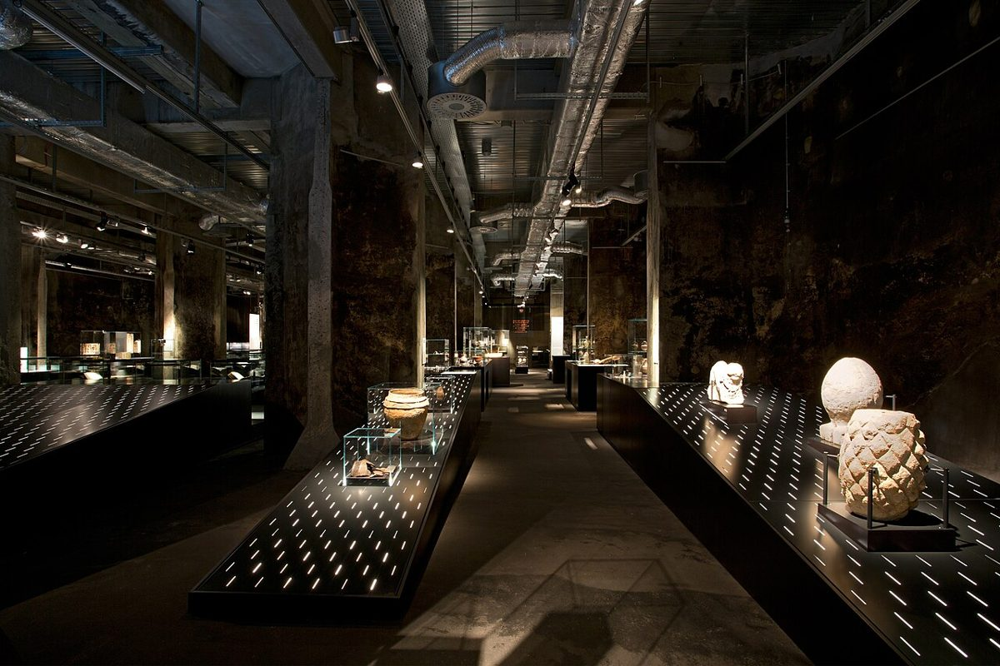

探索德国鲁尔区的工业瑰宝：关税同盟煤矿工业区

位于德国北莱茵-威斯特法伦州的鲁尔区，以其独特的工业文化遗产闻名于世，而关税同盟煤矿工业区（Zollverein）则是这一区域的代表性景点。这里不仅是联合国教科文组织世界文化遗产，更是艺术、设计与工业历史的完美结合。无论你是历史爱好者、建筑迷，还是文艺青年，这里都能带给你难忘的体验。
如何到达关税同盟煤矿工业区
从杜塞尔多夫或埃森出发，乘坐公共交通工具即可轻松到达关税同盟煤矿工业区。埃森火车站有多条公交线路直达景区，车程约20分钟。如果你自驾前往，景区周边有充足的停车位，方便快捷。
最佳旅游时间
鲁尔区的气候温和，四季皆宜游览。春秋两季气温适宜，户外活动最为舒适。夏季是文化活动的旺季，许多露天展览和音乐会在此举行。如果你喜欢冬季的宁静氛围，圣诞节期间的灯光装饰也别有风味。
不容错过的景点
1. 红点设计博物馆
位于关税同盟煤矿工业区的红点设计博物馆，是设计爱好者必去的地方。这里展示了全球最优秀的工业设计作品，每一件展品都充满了创意与灵感。
2. 煤矿博物馆
煤矿博物馆深入介绍了煤矿开采的历史与技术，让你亲身感受矿工的工作环境。通过互动展览，你可以更直观地了解工业革命的进程。
3. 工业文化步道
沿着工业文化步道漫步，你可以欣赏到保存完好的工业建筑群。无论是烟囱、矿坑还是输送带，每一处都诉说着鲁尔区的辉煌历史。
4. 艺术与文化中心
关税同盟煤矿工业区不仅是历史的见证，也是现代艺术的舞台。这里经常举办艺术展览、音乐会和文化活动，适合文艺爱好者前来探索。
5. 观景塔
登上观景塔，你可以俯瞰整个工业区的壮丽全景。无论是白天的工业风貌，还是夜晚的灯光璀璨，都会让你流连忘返。
当地美食推荐
游览关税同盟煤矿工业区的同时，别忘了品尝当地的美食。鲁尔区的传统菜肴如猪肘、香肠和酸菜，都是不可错过的美味。此外，埃森市还有许多国际风味餐厅，满足多样化的口味需求。
总之，关税同盟煤矿工业区是一个融合历史、艺术与美食的独特目的地。无论你是独自旅行，还是与家人朋友同行，这里都会为你带来一次难忘的旅程。
Haiktec
Text mit KI erstellt und automatisch geprueft.